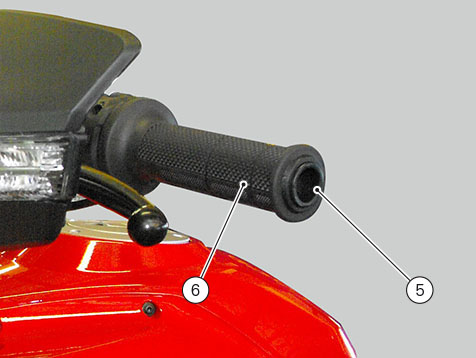
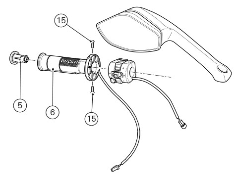
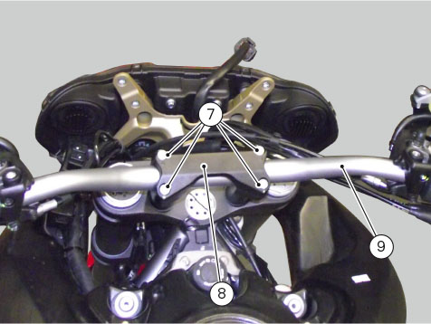

First remove throttle control, front brake control and clutch hydraulic control.
Remove the RH switch (1): disconnect connector from main wiring and loosen screws (2).
Remove the LH switch (3): disconnect connector from main wiring and loosen screws (4).
Removing the handgrips
Loosen internal screw and remove plug (5) to remove handgrips (6).
On the left handgrip, undo the two retaining screws (15) to the handlebar.
Slide out handgrips (6) making sure not to damage them.


Working on both heated grips in the same way, release the wiring from the ties and disconnect connector (16) for LH handgrip
and (17) for the RH handgrip.
Removing the handlebar
Undo and remove the screws (7) securing the U-bolt (8).
Remove the U-bolt (8).
Remove the handlebar (9) from its seat on the steering head.

Loosen the screws (10), and remove the stud bolts (11) from the steering head; recover the washers (12).